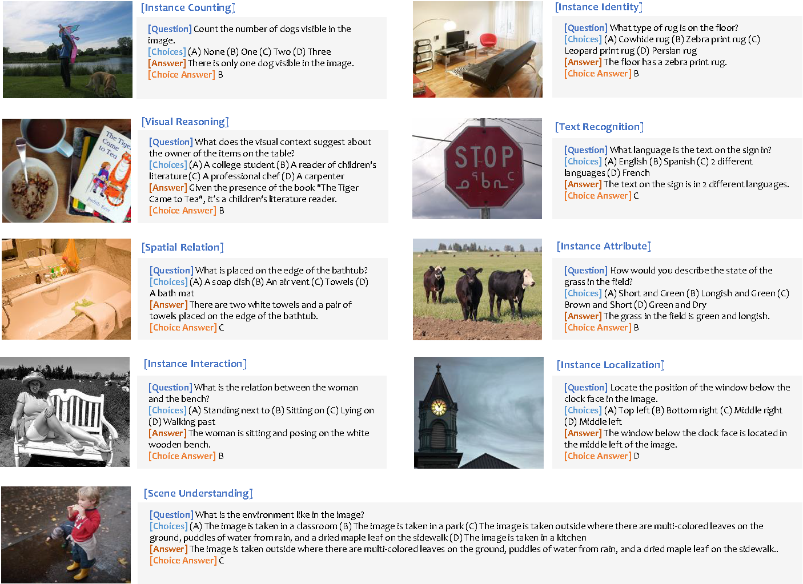

In this paper, we propose MLLM-DataEngine, a novel closed-loop system that bridges data generation, model training, and evaluation. Within each loop iteration, the MLLM-DataEngine first analyzes the weakness of the model based on the evaluation results, then generates a proper incremental dataset for the next training iteration, and enhances the model capability iteratively. Compared with previous instruction fine-tuning dataset collection methods which are separate from the benchmarking, MLLM-DataEngine shows better targeting and can improve MLLMs's capabilities more effectively. Firstly, we propose an Adaptive Bad-case Sampling module, which can effectively analyze model weakness based on the benchmarking results and adjust the generation of incremental datasets flexibly. Secondly, we resort to GPT-4 to generate high-quality data for specific capability types. Meanwhile, the most representative in-context examples and abundant information are provided to GPT-4, which helps GPT-4 fully comprehend the model's weakness and further guarantees high-quality generated data. Through extensive experiments, we find MLLM-DataEngine could boost the MLLMs capability in a targeted and automatic manner without human participants. We hope MLLM-DataEngine could be a general solution for the following MLLMs data curation. The MLLM-DataEngine has been open-sourced and is now available at https://github.com/opendatalab/MLLM-DataEngine.
The framework of MLLM-DataEngine, showcased in this paper, establishes a cyclical process for iterative enhancement between the model and data. The system harnesses generated data to improve the ability of the model while utilizing feedback from the model evaluation to guide the data generation. This approach allows joint optimization of models and data across multiple iterations, facilitating quick and effective improvement of model performance. MLLM-DataEngine is consisted of four steps:
1. Model Evaluation: The model's capabilities are systematically evaluated and bad cases are collected from identified weaknesses.
2. Prompt Construction: Next, rich image information, well-demonstrated question types and carefully selected in-context examples obtained by Adaptive Bad-case Sampling~(ABS) are integrated to construct a proper prompt for GPT-4 data generation.
3. Data Generation: The prompt constructed in the previous step is fed into GPT-4 for data generation. Meanwhile, all generated data are carefully filtered and processed to ensure high-quality instruction fine-tuning.
4. Model Training: Finally, we use the data generated through the above process to re-instruct fine-tune the model.

The MLLM-DataEngine generate data contains a clear, consice instruction, and corresponding answer. Besides, the instruction-answer pair is reformatted into multi-choices question answering format. The generated data is organized in the following format:
[
{
"instruction": "Where is the man wearing a black backpack positioned in the picture?",
"answer": "The man wearing a black backpack is located at the left side of the image, ...",
"short_answer": "Letf middle",
"options": ["Top right", "Bottom right", "Bottom left", "Left middle"],
"choide_answer": "D",
"image": "vg/VG_100K_2/2404787.jpg",
"qtype": 4,
},
...
]
"instruction": a clear, consice instruction
"answer": direct answer to the instruction
"short_answer": the short answer to the instruction
"options": four options corresponding to the instruction
""choice_answer": correct choice answer option
"image": Visual Genome image path
"qtype": question type in SEED-Bench, demonstrated in the following:
{
1: 'Scene Understanding',
2: 'Instance Identity',
3: 'Instance Attributes',
4: 'Instance Location',
5: 'Instances Counting',
6: 'Spatial Relation',
7: 'Instance Interaction',
8: 'Visual Reasoning',
9: 'Text Understanding'
}
@misc{zhao2023mllmdataengine,
title={MLLM-DataEngine: An Iterative Refinement Approach for MLLM},
author={Zhiyuan Zhao and Linke Ouyang and Bin Wang and Siyuan Huang and Pan Zhang and Xiaoyi Dong and Jiaqi Wang and Conghui He},
year={2023},
eprint={2308.13566},
archivePrefix={arXiv},
primaryClass={cs.LG}
}
By utilizing this service, users are bound to comply with the stipulated terms: The service is primarily a research preview, designed exclusively for non-commercial applications. It offers only limited safety measures and there's a possibility it may produce offensive content. Users are strictly prohibited from using the service for any illegal, harmful, violent, racist, or sexually explicit purposes.
This service, being a research preview, is intended solely for non-commercial use and is governed by the model License of LLaMA. If you encounter any potential violation, we urge you to contact us immediately.